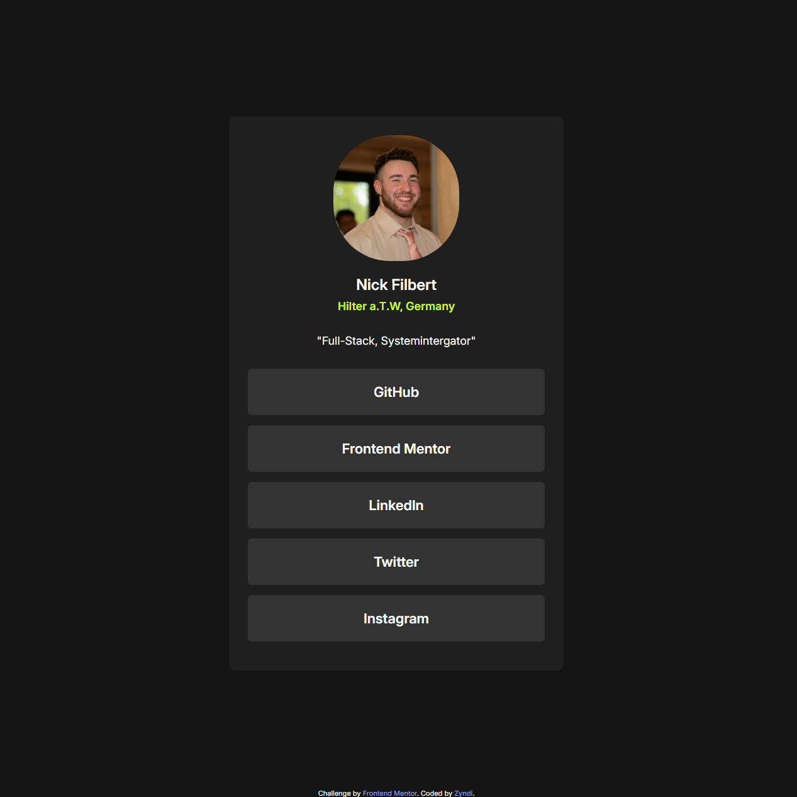
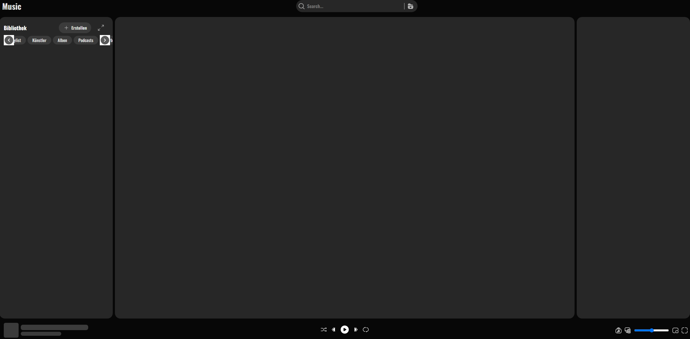
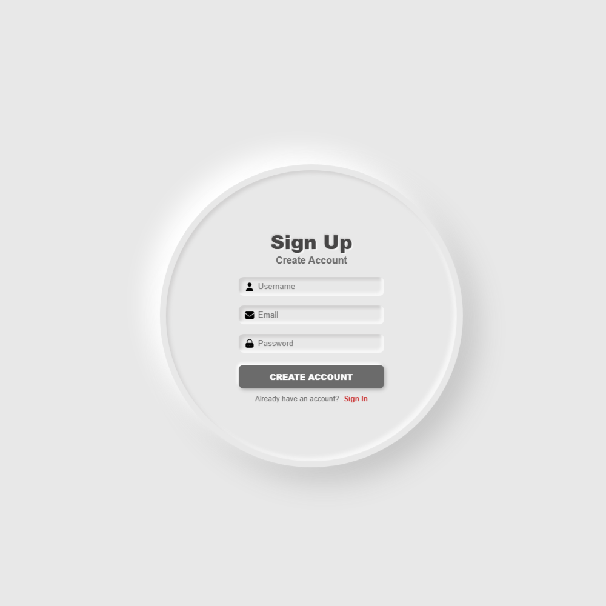
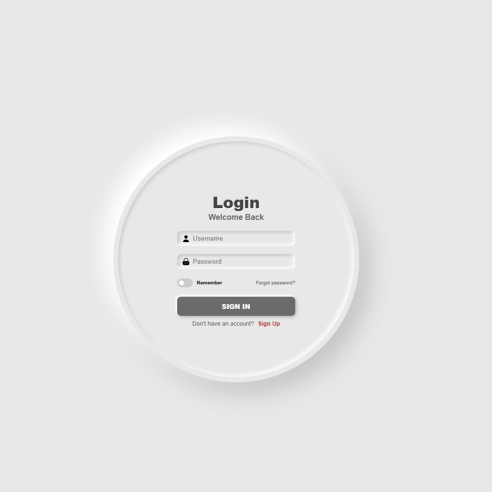

Der weg zum Ziel
Im Folgenden präsentiere ich meine bisherigen Projekte, die ich im Rahmen meiner Ausbildung und Selbstentwicklung umgesetzt habe. Schon in frühen Jahren habe ich mich sehr für die Technik interessiert, was sich durch starkem Interesse an Technischen Problembehandlungen- bzw lösungen auzeichnete. Durch erste erfahrungen des PCs auseinanderbauen und wieder zusammensetzten sowie erste kleine Programmierungen und Shell/CMD Commands, hat sich da das Feuer in mir entfacht und die Leidenschafft ist geboren. Nach langen Jahren des nichttrauens und der hingabe zu einem "einfacheren Job", habe ich mich 2026 dafür entschieden den ersten Schritt in richtung meines Traumberufes Fachinformatiker zu machen...
Meine Projekte
Linktree like Link-Karte

Ich habe über eine Challenge von Frontend Mentor eine Linktree ähnliche Link-Karte erstellt.
Spotify Clone

Das ist der versuche eine Spotify-ähnliche Anwendung zu erstellen die die Funktionen von Spotify so ähnlichen sein sollen wie möglich, um so die ganze dynamik dahinter besser zu verstehen und umzusetzten.
SignUp/Login


Ein einfaches SignUp- und Login-System, das mit HTML, CSS und JavaScript implementiert wurde. Dabei baue ich einen Server von grundauf auf, mit authRoutes, authMiddleware, authController und vieles was noch dazu kommt. Das ganze ist noch in der Aufbauphase.